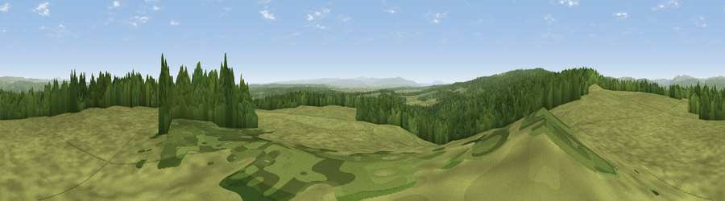

Bolts Law
#7428 in England · top 14% of its area beats it · —The view, rendered

A 360° render of this exact spot computed from the terrain model, tree cover and land cover — summer colours, afternoon light, calibrated against photographs of famous viewpoints. Real trees, hedges and buildings will differ in detail.
The panorama
Grey silhouette: terrain skyline in each direction (720 bearings, Earth curvature and refraction included). Dashed green: skyline with trees (+15 m) and buildings (+8 m) as obstacles. Blue strip: how far the ground is visible on each bearing.
Where the view opens
Wedge length = distance to the farthest visible ground on that bearing (vegetation-aware). Rings at 10, 25 and 50 km.
What fills the view
61% grassland · 39% woodland
Angular shares of the visible panorama (visual magnitude), not map area. Landscape diversity 0.30 (0–1 Shannon).
Key numbers
More beautiful places nearby
The staircase of upgrades: each row has a higher view potential than everything closer. Driving times are estimates from straight-line distance, calibrated against real road routing — check an actual route before setting out.
| Place | Direction | Drive | Score |
|---|---|---|---|
| Viewpoint c11634_7288 | W · 5 km | ~10 min | 71.8 |
| Sighty Crag | W · 9 km | ~18 min | 74.7 |
| Viewpoint near Bewcastle | WSW · 10 km | ~20 min | 76.6 |
| Viewpoint near Bewcastle | WSW · 11 km | ~21 min | 78.9 |
| Viewpoint c11644_7156 | W · 11 km | ~21 min | 80.8 |
| Viewpoint c11995_7247 | NNW · 19 km | ~33 min | 82.1 |
| Viewpoint near Hepple | ENE · 37 km | ~55 min | 82.4 |
| Viewpoint c12273_7856 | NE · 40 km | ~59 min | 83.7 |
55.12983, -2.48575 · source: osm peak · position refined by local search. Computed location — check access rights before visiting.